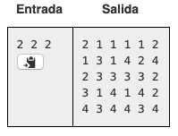

Descripción:
Considera una pieza con forma de L formada por 3 cuadros adyacentes como se muestra en la figura:
Se requiere cubrir una cuadricula con piezas como la antes descrita dejando un solo cuadro de 1x1 vacío. La cuadrícula consta de 2n filas (numeradas de 1 a 2n) por 2n columnas (numeradas también de 1 a 2n). Para cubrir la cuadrídula no es válido colocar una pieza sobre otra ni dejar una o más piezas parcialmente fuera de la cuadrícula. Es posible comprobar que toda cuadrícula de dichas dimensiones puede ser cubierta siguiendo las restricciones anteriores sin importar donde se encuentre el espacio vacío. Por ejemplo, para n=2 y el espacio vacío situado en la (2, 2), una posible forma de cubrir la cuadrícula es:

Problema:
Escribe un programa que dado nn y la posición del espacio vacío, encuentre una manera de llenar la cuadrícula con las reglas antes mencionadas. Si hay más de una solución cualquiera será aceptada.Entrada
Línea 1: Tres números enteros separados por espacios representando nn, la fila donde se encuentra el espacio vacío y la columna donde se encuentra el espacio vacío respectivamente.Salida:
Líneas 1 a (22n - 1)/3: Cada línea deberá representar una pieza y constar de 6 enteros separados por espacios representando la fila y la columna de cada cuadro de la pieza respectivamente. Es decir, los primeros dos números representan la fila y la columna de un cuadro, los siguientes 2 números representan la fila y la columna de otro cuadro y los últimos 2 números representan la fila y la columna de otro cuadro. No importa el órden en que se impriman los cuadros de cada pieza L.
Link del problema